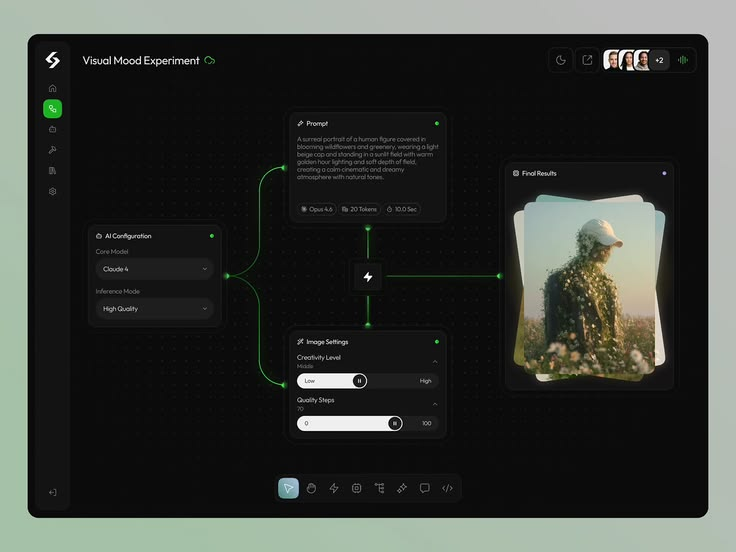
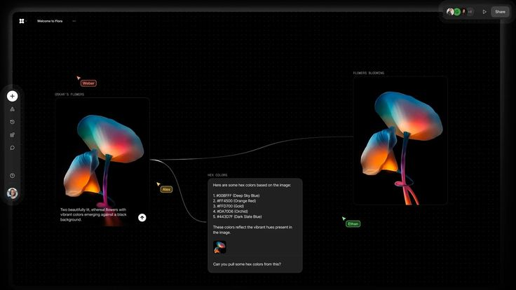
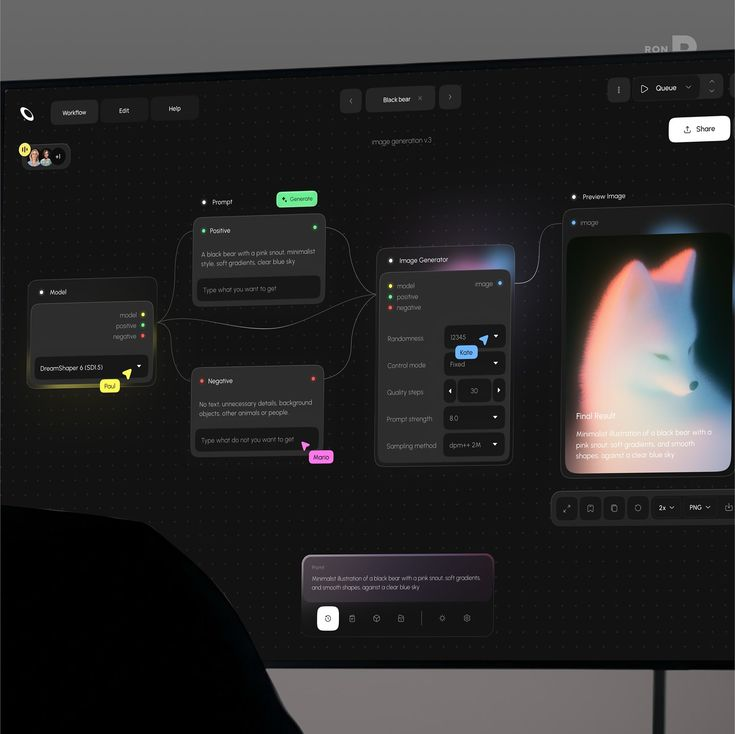
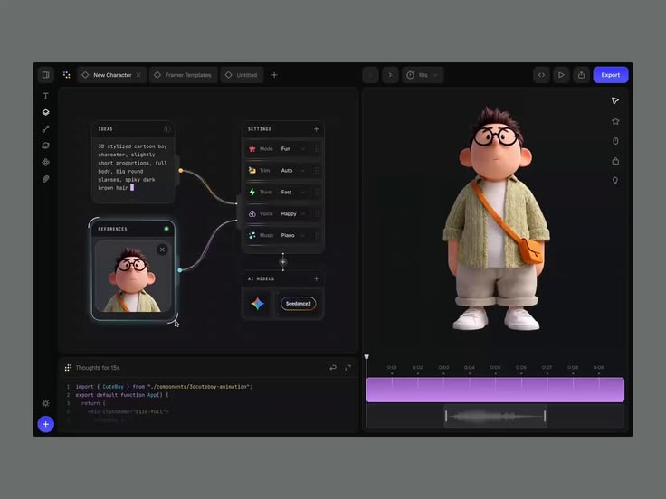
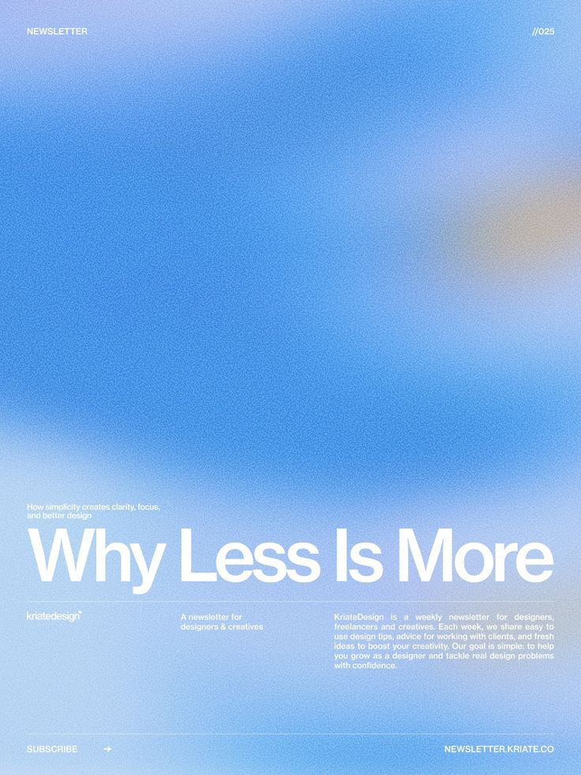

Seven versions, thirty commits, five reference images, seven course corrections — a working diary of one design system iterating from a neutral baseline toward a muted artistic register. Every shift is documented; every wrong turn, attributable to a specific signal from the desk.





The opening move — visual references collected, DESIGN spec drafted, first mockup produced. Sets the chrome vocabulary: emerald primary, glass panels, mono-caps labels. Everything that follows is in conversation with — and often a correction to — this baseline.
Project kickoff. Reference batch curated to anchor a direction.
Emerald demoted. Cobalt becomes primary brand color. Aura + grain pattern introduced for focal surfaces. Mono-caps typography purged from chrome (kept only for the build-label footer). Bottom dock + quick-add composer reach their shipped form. Space Grotesk display added.
User: "green feels too utility — push toward an editorial register."
Aerogel atmospheric tier introduced: sky-300, sky-100, peach-200. Pigment grain bumped 6% → 10-12%. Aura becomes multi-stop. Canvas wash added (later removed in v0.4.4). The signature iridescent rim at the top edge of focal surfaces lands this round, after the original rim-less version read as too thin.
Reference 05 (Arpan Karmakar) — atmospheric depth + warm bleed prove possible without losing structure.
Systematized bloom from "focal workbench only" to a full deployment
roster. Pattern A — whole-surface bloom for important nodes.
Pattern B — chromatic edge-endpoint bloom for signal
junctions. Tier multipliers (HERO 1.5× / SECONDARY 1.0× / AMBIENT
0.6×) via a single --bloom-strength
variable. Breathing animations: generating 2.4s for
in-flight tasks, attending 4.5s for selection. Selected
nodes propagate their breath to connected edge endpoints.
Reference 03 (Image Generator card) + Reference 04 (Tranmautritam edges) — two distinct bloom patterns identified, both needed.
Cards stop melting into the canvas. Translucent glass + bloom were dissolving boundaries — the fix is an opaque base (rgba 20,24,42,0.94) + a content-box XOR border-box mask that physically excludes bloom from the frame interior. Aura on opaque surfaces deprecated (94% blocked anyway). Round-2: canvas atmospheric wash stripped + chrome panels (right rail / dock) go opaque so dialog bubbles become the translucent layer with hierarchy.
User: "Moonlit chase 框体与背景几乎融为一体" — translucent glass + atmospheric canvas = no boundary.
The longest arc. Six rounds of correction land the design at its current resting point:
padding-box → content-box). What we'd been seeing was the iridescent rim, not bloom itself.User across the round-arc: "bloom 太大" · "字体不统一" · "外框消失了" · "调调偏科技，期望偏艺术". Each correction tightened the spec.
v0.4.5 lands in the React codebase. globals.css
gains 432 lines of design-system foundation (tokens, utility
classes, bloom recipe, breath animations, vendor-pseudo slider).
Eight components migrated. Self-review caught four real bugs
(missing base bloom recipe, stacking-context escape, region text
contrast, cascade-layer ordering breaking position: absolute).
TypeScript + production build both green.
User: "你是主力，做完我再 Review."
"字体太冷，期望 editorial 一点"
v0.4.1 — emerald demoted, cobalt promoted, Space Grotesk display + mono-caps purge from chrome.
"bloom 不够 atmospheric，参考 Arpan"
v0.4.2 round-1 — Aerogel tier (sky / peach) + multi-stop aura + canvas wash + pigment grain.
"rim 太弱，只在顶边那点点"
v0.4.2 round-2 — iridescent rim glow added as a deliberate 3px top-edge spectrum bar.
"bloom 应用太窄，只有焦点工作台一处"
v0.4.3 — Pattern A + B deployment roster with tier multipliers and breath inheritance.
"Moonlit chase 框体与背景几乎融为一体"
v0.4.4 — opaque base + content-box mask. Card stops being canvas.
"bloom 太大、外框消失、字体不统一"
v0.4.5 round-2/3/4 — three coupled rounds: real mask fix, retreat to top-edge restraint, then bloom inside the visible outer shell.
"调调偏科技，期望偏艺术、非理性"
v0.4.5 round-5 — RGB-pure saturated accents → muted artistic palette (brand-soft, sage, ochre, mauve, teal-soft). Cobalt reserved for CTAs.